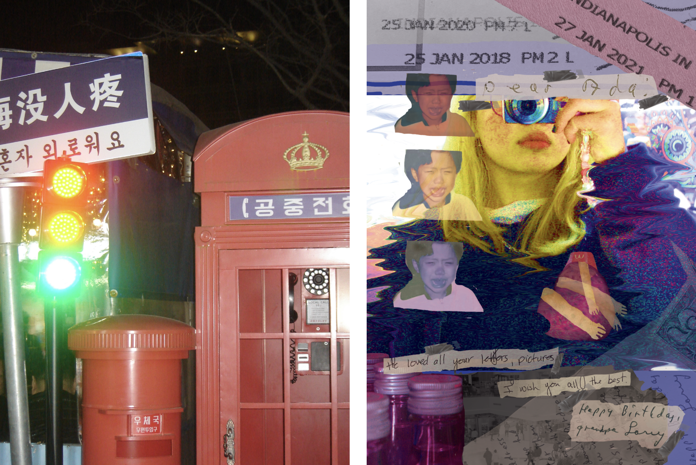
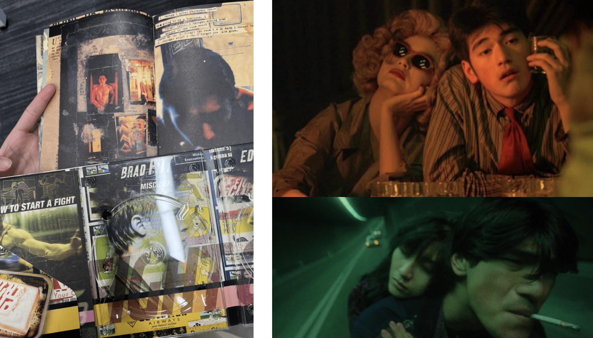

March 5, 2023
Photo diptych describes two things that are opposite yet similar, like the yin and yang. Diptych offers two sides to the story meaning that in order to see the whole story, you need both. Everything is not as it seems at first. Seeing pictures alone only allows the audience to see one side of the story. However, on the other, the audience can see another side. This inspired me to create a design using irony. Irony itself is a representation of Diptych. In order to know the opposite of something, you have to know both sides. Like the yin and yang, you need to see one in order to see the other. As a result, by using opposite meanings of one concept, I can create an artwork that depends on two pieces in order to exist.
In my concept, I plan to photoshop a collage that shares a memory that I felt cared for, in order to create the oppsite meaning of the phrase I will use in my originally photographed piece. To create a collage, I will combine clips of my younger self and letters from a family member. I also hope to create a saturated and vintage vibe in my photoshopped piece as I want to make it seem like a memory.
 Original Taken Photo (Left/Top): In this first photo, there is a Chinese Phrase saying 没人疼. The translation of this is that nobody cares, often times your wellbeing. I used this as a base in order to connect to the other photoshopped photo. Photoshopped Piece (Right/Bottom): In this piece, I used myself taking a picture as the main saturated object. I wanted to do this in order to create a meaning that the photo I'm taking brings bakc memories. In order to relay the memories, I mainly used blend in order to keep pieces visible while emphasing on the background picture. This creates the idea that the memories are stemmed from the photo I'm taking. In this piece I also used the erasor tool in order to make it seem lke the pieces are cutup because after all, memories are like pieces here and there.

I also used fry hands in order to add my own style into the artwork, I wanted to avoid too much realism, and rather, add in some things I perosnally like. I really like strawberries and fries, which I found in my other photos in my contact sheet, so I used that to create a heart which creates an empahtetic touch to the piece.
For the collage, I was inspired by the pieces attached below from Fght Club and Happy Togethe. These pieces each carry a fun and vintage collage style that attracted me. However, throughout my whole experience, I was especially inspired by director Wong Kar Wai's style as he beautifully used saturated styles in his works, like in Chungking Express and Fallen Angels.  Return to Classes →